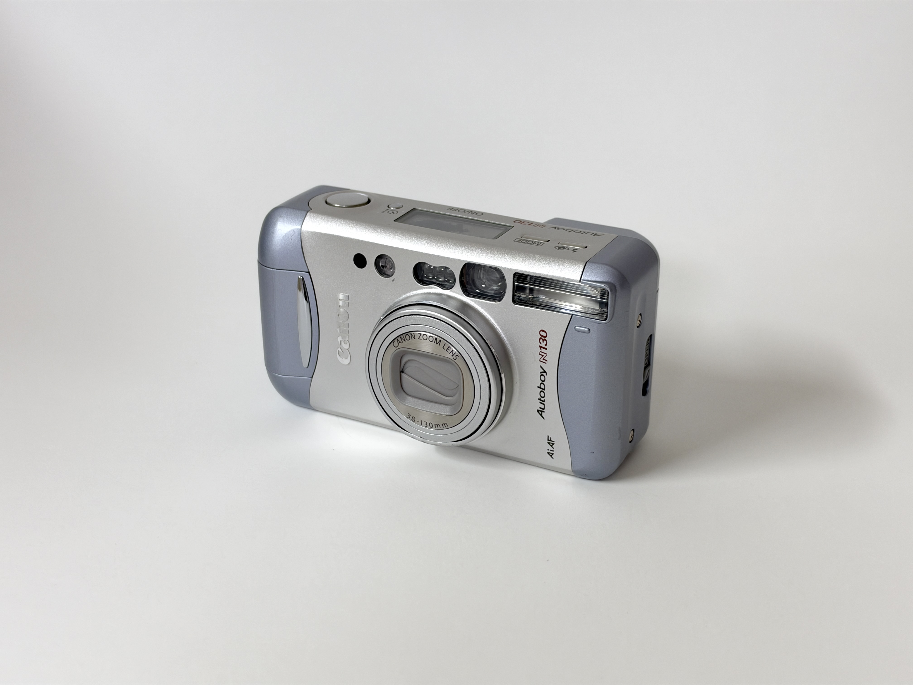
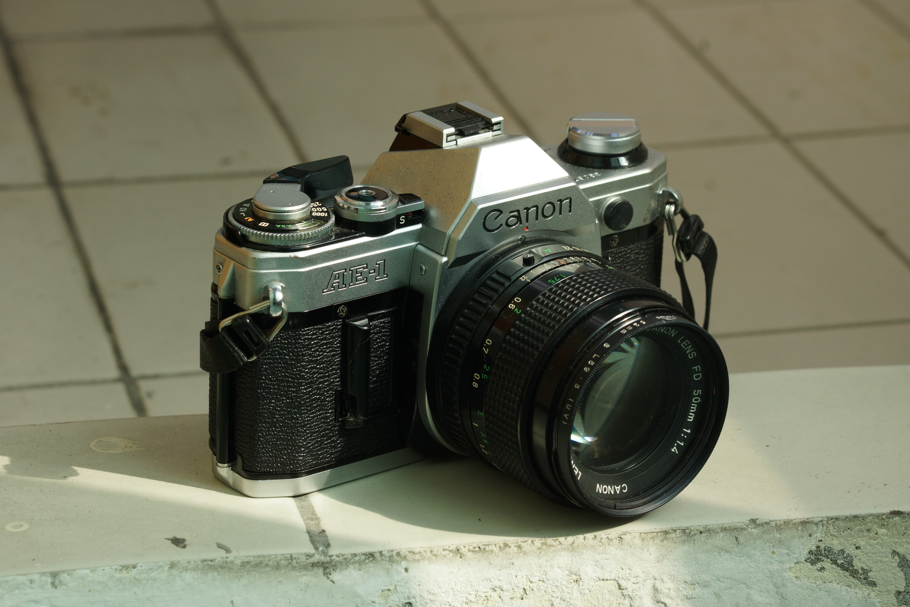
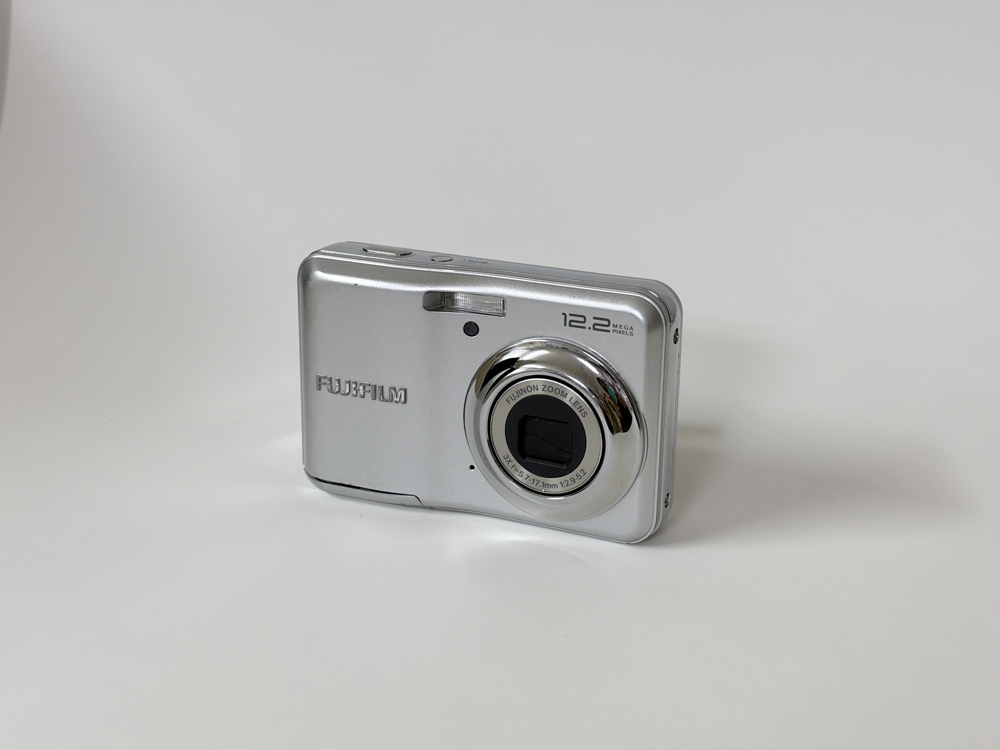
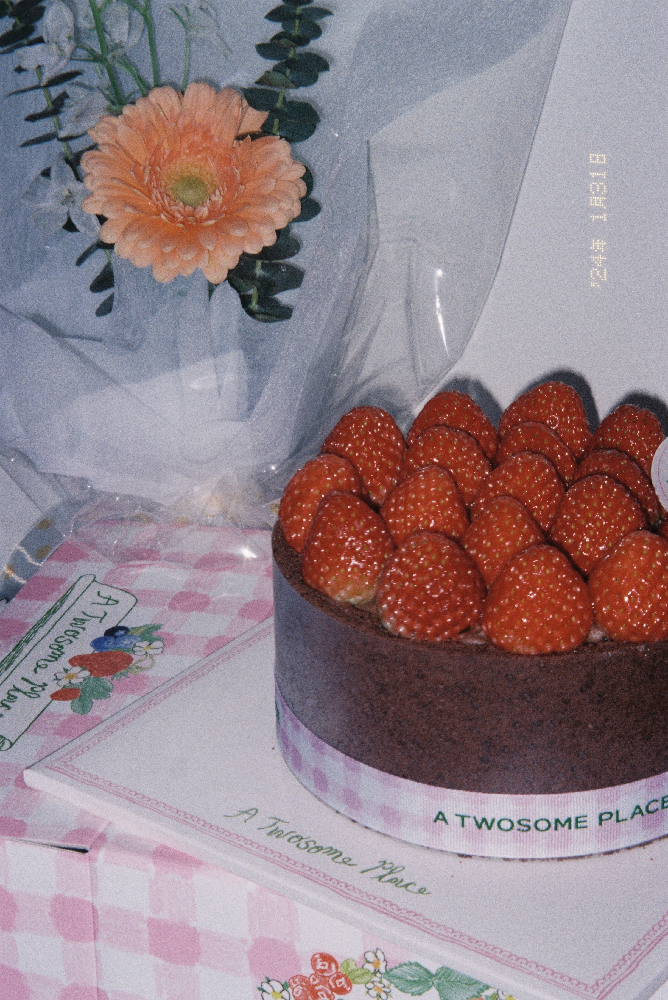
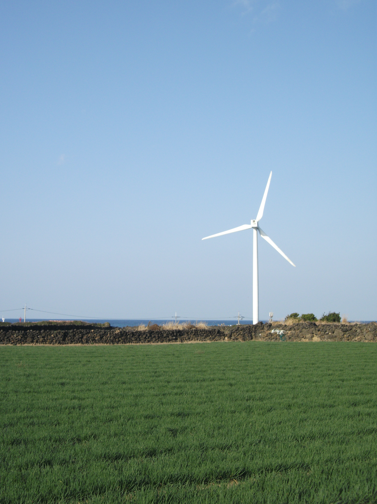
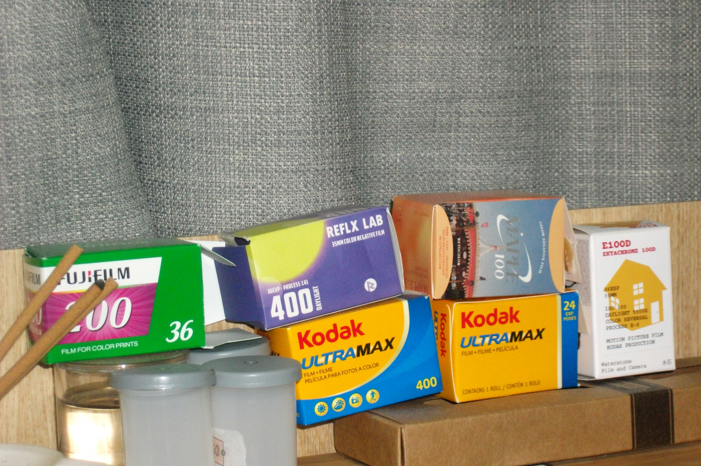

#필름 카메라
캐논 오토보이 n130
저의 첫 필카! 자동필카여서 조작이 쉽고 날짜와 캡션을 넣을 수 있습니다.
플래시도 내장되어 있어서 어두운 환경에서 사용 가능합니다.
🐵
아직 필름 초보

저의 첫 필카! 자동필카여서 조작이 쉽고 날짜와 캡션을 넣을 수 있습니다.
플래시도 내장되어 있어서 어두운 환경에서 사용 가능합니다.



코닥 컬러플러스 200
후지 200

코닥 울트라맥스 400
